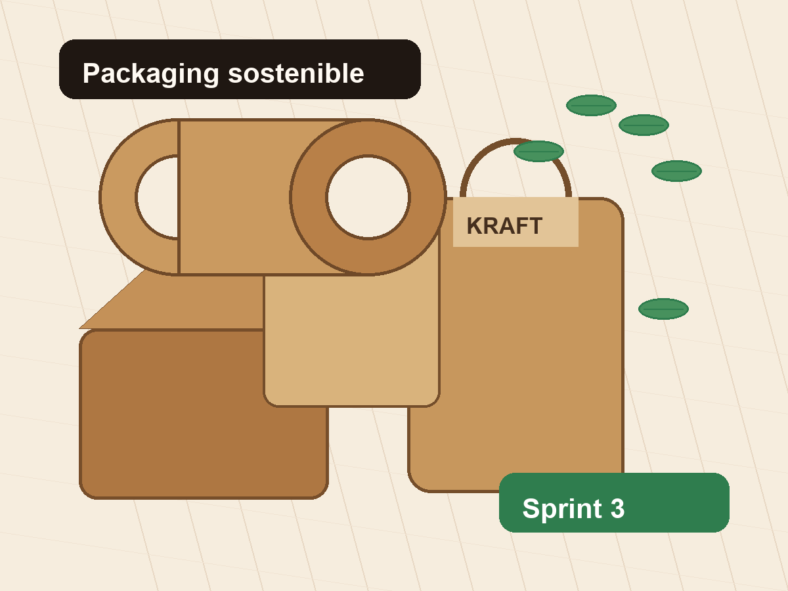

Proyecto de IA Agéntica aplicado a KraftPack Perú
Asistente Inteligente Comercial - KraftPack Perú
Sprint 3: Razonamiento y Herramientas
Desarrollo de un agente inteligente orientado a la atención comercial, recomendación de empaques, consultas sobre productos kraft y solicitudes de cotización.

Datos del sprint
Resumen ejecutivo del incremento
Objetivo del Sprint 3
Primera versión funcional del asistente comercial
El objetivo del Sprint 3 es implementar una primera versión funcional del asistente inteligente comercial para KraftPack Perú, capaz de interpretar consultas de clientes, recomendar productos de packaging, utilizar herramientas de apoyo y mantener memoria temporal durante la conversación.
Agente inteligente
Funcionalidades principales
Capacidades implementadas para apoyar la atención comercial de KraftPack Perú.
Consulta de productos
Permite orientar al cliente sobre papel kraft, bolsas, cajas, envases y empaques sostenibles.
Recomendación de empaques
Sugiere alternativas según necesidad, tipo de negocio y uso esperado del packaging.
Cotización simulada
Solicita producto, cantidad y medida para generar una orientación inicial.
Verificación de disponibilidad
Simula la validación de stock referencial para atención comercial.
Memoria a corto plazo
Mantiene el contexto reciente para dar continuidad a la conversación.
Consultas no reconocidas
Entrega una respuesta clara cuando la solicitud no coincide con el dominio comercial.
Sprint 3
Herramientas simuladas
Componentes de apoyo para evidenciar integración de herramientas sin backend.
Catálogo de productos
Permite consultar productos como papel kraft, bolsas, cajas, envases y empaques sostenibles.
Recomendador comercial
Sugiere productos según la necesidad del cliente y el tipo de uso comercial.
Estimador básico de cotización
Solicita cantidad, medida y tipo de producto para generar una orientación inicial.
Verificador de disponibilidad
Simula la validación de productos disponibles para atención comercial.
CRISP-ML
Relación metodológica
Aplicación de las fases CRISP-ML al desarrollo del asistente comercial.
Comprensión del negocio
Se identifica la necesidad de mejorar la atención comercial y orientación de clientes de KraftPack Perú.
Comprensión de datos
Se analizan consultas de clientes, categorías de productos, intenciones y datos simulados del catálogo.
Preparación de datos
Se organizan palabras clave, reglas de respuesta, categorías y flujos de consulta.
Modelado
Se implementa el razonamiento básico del agente, detección de intención, selección de herramientas y generación de respuestas.
Evaluación
Se prueban consultas relacionadas con papel kraft, bolsas, cajas, cotizaciones y productos ecológicos.
Despliegue
Se presenta una versión funcional del asistente y una página web informativa publicada en GitHub Pages.
Scrum
Relación con el desarrollo incremental
Historias de usuario
Se definen necesidades del cliente y del administrador para guiar el incremento.
Backlog del Sprint 3
Se priorizan tareas de razonamiento, herramientas simuladas, memoria y validación funcional.
Desarrollo incremental
Se construye una primera versión demostrable del asistente comercial.
Pruebas funcionales
Se verifican consultas sobre productos, cotización, memoria y errores controlados.
Review del Sprint
Se presenta el resultado del sprint como evidencia de avance técnico y metodológico.
Backlog funcional
Historias de usuario principales
Como cliente, quiero consultar productos de KraftPack para conocer opciones de empaques.
Como cliente, quiero recibir recomendaciones de empaques según mi necesidad para elegir el producto adecuado.
Como cliente, quiero solicitar una cotización para conocer una orientación inicial del producto requerido.
Como administrador, quiero que el sistema conserve el contexto reciente para mejorar la atención del agente.
Como cliente, quiero recibir una respuesta clara cuando mi consulta no sea reconocida para saber cómo continuar.
Simulación visual
Ejemplo de interacción del agente
Demostración sin backend, preparada para explicar el flujo comercial del Sprint 3.
Resultado esperado
Incremento funcional del Sprint 3
Al finalizar el Sprint 3 se obtiene una primera versión funcional del asistente inteligente comercial, capaz de interpretar consultas, usar herramientas simuladas, recomendar productos y mantener memoria a corto plazo durante la interacción.